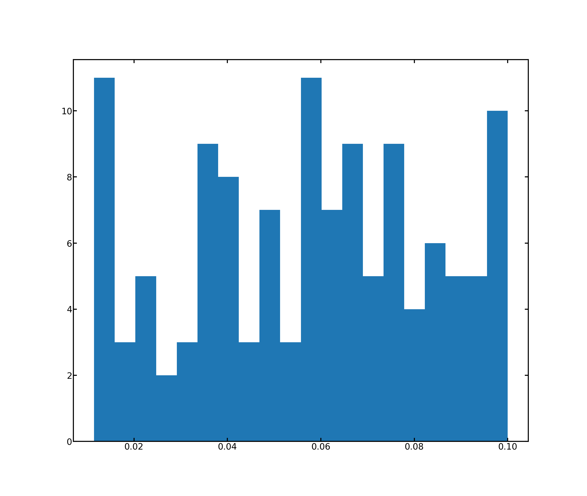

GenericGeometry¶
- class GenericGeometry(*args, **kwargs)[source]¶
Bases:
openpnm.core.Base.ParamMixin,openpnm.core.Subdomain.Subdomain,openpnm.core.ModelsMixin.ModelsMixinThis generic class is meant as a starter for custom Geometry objects
It has no pore-scale models assigned to it, so a a blank slate. Note that all OpenPNM Geometry sub-classes are just GenericGeometry instances with a number of models added.
- Parameters
network (GenericNetwork) – The Network object to which this Geometry applies.
pores (array_like) – The list of pores where this Geometry applies.
throats (array_like) – The list of throats where this Geometry applies.
name (str) – A unique name to apply to the object. This name will also be used as a label to identify where this Geometry applies.
project (Project, optional) – A Project can be specified instead of
network.
Examples
>>> import openpnm as op >>> pn = op.network.Cubic(shape=[5, 5, 5]) >>> Ps = pn.pores('all') # Get all pores >>> Ts = pn.throats('all') # Get all throats >>> geom = op.geometry.GenericGeometry(network=pn, pores=Ps, throats=Ts)
Now assign pore-scale models to the empty object:
>>> geom.add_model(propname='pore.size', ... model=op.models.misc.random, ... element='pore', ... num_range=[0.01, 0.1])
Confirm that the object has one added model:
>>> print(geom.models) ――――――――――――――――――――――――――――――――――――――――――――――――――――――――――――――――――――――――――――――――――――― # Property Name Parameter Value ――――――――――――――――――――――――――――――――――――――――――――――――――――――――――――――――――――――――――――――――――――― 1 pore.size model: random element: pore num_range: [0.01, 0.1] seed: None regeneration mode: normal ―――――――――――――――――――――――――――――――――――――――――――――――――――――――――――――――――――――――――――――――――――――
The results of the model can be seen using the
show_histfunction:>>> import matplotlib as mpl >>> mpl.use('Agg') >>> geom.show_hist('pore.size')
{kind=link}